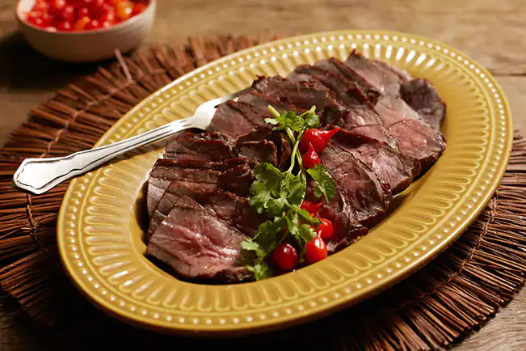

TRADIÇÃO • CULTURA • GASTRONOMIA
Carne de Sol em Carlos Chagas, MG
Um sabor que representa a tradição da culinária brasileira. Conheça mais sobre a carne de sol e sua valorização em Carlos Chagas, no Vale do Mucuri.
Conheça essa história
A história da carne de sol em Carlos Chagas
Carlos Chagas está localizada no Vale do Mucuri, em Minas Gerais. A cidade possui uma história ligada ao desenvolvimento da região, à vida no campo e às atividades rurais. A pecuária teve importância na economia local e ajudou a construir hábitos alimentares presentes na vida de muitas famílias.
A carne de sol é um alimento tradicional da culinária brasileira, especialmente conhecido no Nordeste. Sua história está relacionada às antigas formas de conservação da carne, quando o sal e a perda parcial de umidade eram utilizados para ajudar a conservar o alimento.
Com o passar do tempo, a carne de sol conquistou espaço em diferentes regiões do Brasil. Em Minas Gerais, também é apreciada e aparece em refeições, restaurantes e receitas que valorizam os sabores tradicionais.
Em Carlos Chagas, falar sobre a carne de sol é uma oportunidade de valorizar a cultura alimentar, a produção regional e o trabalho das pessoas que atuam com a criação de animais, o comércio de alimentos e a gastronomia.
Este projeto busca apresentar a carne de sol e destacar a importância de conhecer e divulgar os sabores da cidade. A proposta é mostrar como a gastronomia pode ajudar a valorizar a cultura local e despertar o interesse de moradores e visitantes.
Um sabor que merece ser conhecido
Valorizar a carne de sol é também valorizar a cultura, a história e as pessoas que fazem parte da identidade gastronômica da região.
Importante: ainda é necessário pesquisar registros históricos ou entrevistar moradores e produtores para descobrir desde quando a carne de sol é produzida em Carlos Chagas.
Como é feita a carne de sol?
A carne de sol é conhecida por seu sabor característico e por um processo tradicional de conservação. De maneira geral, sua preparação envolve a seleção da carne, a salga e um período controlado de descanso e perda de umidade.
Seleção da carne
O processo começa com a escolha de cortes bovinos adequados e a preparação da carne em condições de higiene.
Salga
O sal é utilizado para contribuir com o sabor e com a conservação tradicional da carne.
Descanso
A carne passa por um período de descanso, durante o qual perde parte da umidade. O tempo pode variar conforme o método utilizado.
Armazenamento e preparo
Depois do processo, a carne deve ser armazenada de maneira adequada e pode ser utilizada em diferentes receitas.
Você sabia?
A carne de sol não é exatamente igual à carne-seca ou ao charque. Existem diferenças nos métodos de salga, conservação e quantidade de umidade presente no produto.
Pratos preparados com carne de sol
A carne de sol pode ser utilizada em várias receitas da culinária brasileira. Ela combina com diferentes acompanhamentos e pode aparecer em pratos simples ou mais elaborados.
Carne de sol acebolada
Uma preparação muito conhecida, acompanhada de cebolas e outros temperos.
Escondidinho
Prato feito com carne desfiada e uma camada de purê, geralmente de mandioca ou batata.
Carne de sol com mandioca
Uma combinação bastante apreciada na culinária brasileira, reunindo carne e mandioca cozida ou frita.
Arroz com carne de sol
Uma receita que mistura arroz, carne desfiada e temperos, formando uma refeição saborosa.
Paçoca de carne de sol
Preparação tradicional que combina carne desfiada ou triturada com farinha e temperos.
Pastel de carne de sol
Uma opção de recheio bastante utilizada em lanches e preparações variadas.
Esses pratos são exemplos da culinária brasileira. É interessante conversar com cozinheiros da cidade para descobrir quais deles são preparados tradicionalmente em Carlos Chagas.
Onde encontrar em Carlos Chagas?
Conheça lugares da cidade onde você pode procurar carne de sol e pratos preparados com esse alimento.
Você pode pesquisar açougues, restaurantes e feiras de Carlos Chagas pelos links abaixo. Entre em contato com os estabelecimentos para confirmar se trabalham com carne de sol.
Açougues da cidade
Pesquise os açougues locais e descubra quais oferecem carne de sol.
Ver localização →Restaurantes
Conheça os restaurantes da cidade e procure pratos preparados com carne de sol.
Ver localização →Feiras e comércio
Explore os espaços de comércio local e conheça os produtos regionais.
Ver localização →Ajude a valorizar a cidade!
Para completar esta pesquisa, registre pelo menos três estabelecimentos confirmados, com nome, endereço e informação sobre a venda ou preparo de carne de sol.
Fontes utilizadas
A pesquisa utiliza referências acadêmicas e fontes de consulta para conhecer melhor a história regional e a produção da carne de sol.
História do Vale do Mucuri
Estudo sobre a história das relações entre sociedade e natureza na região.
Consultar estudo →Produção da carne de sol
Pesquisa acadêmica relacionada à carne de sol e suas características.
Consultar estudo →Prefeitura de Carlos Chagas
Portal institucional para buscar informações sobre o município.
Consultar site →Pesquisa de campo
Também podem ser acrescentadas entrevistas com açougueiros, produtores, comerciantes e cozinheiros de Carlos Chagas. Registre o nome da pessoa, a data da entrevista e peça autorização antes de publicar suas informações ou fotografias.